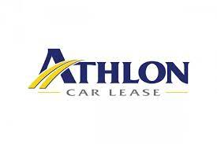
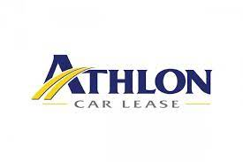

Après avoir eu un apprentissage théorique en audit, conseil et finance d’entreprise chez EY, j’ai eu une carrière axée sur l’audit et l’accompagnement d’entrepreneur et de directions financières et directions générales
Missions clés

Responsable Strategie au sein de Planisense
• Animation d'ateliers stratégiques et définition de la stratégie
• Management de projet d'innovation et de 5 projets de développement interne
• Identification des financements d'innovation et de croissance et contribution à leurs obtentions
• Implémentation de la stratégie avec responsabilités en finance, en juridique et en marketing-commercial
Responsable Administratif & Financier
•Définition et déploiements réussis d’un ERP et d’outils SI RH : Adoptions réussies quasi immédiates
• Constitution de la levée de fond : Business Plan et communication. Objectifs financier/gouvernance atteints
• Supervision des clôtures annuelles des comptes : certification des comptes sans réserve
• Négociation et validation des contrats et résolution des litiges
Auditeur interne
•Audit de processus industriels et financiers en Suisse, Portugal et en France en anglais et en langues locales
• Audit de la qualité opérationnelle et transition vers la norme qualité ISO 9001 : 2015
• Missions au sein d’équipes multiculturelles et communications à des comités de 4 à 12 personnes

Auditeur financier
• Application de la stratégie SI : optimisation des processus financiers et conduite du changement
• • Supervision de la clôture comptable d’EY Avocat/GIE (8 comptables) : Félicitations des associés reçues
• Audit légal/Contrôle interne, encadrement d’équipes (1 à 4 personnes) et communication aux directions
• Principaux clients (+20 entreprises) : dont Lafarge / Valeo SE / Playmobil / Groupe G7
 
